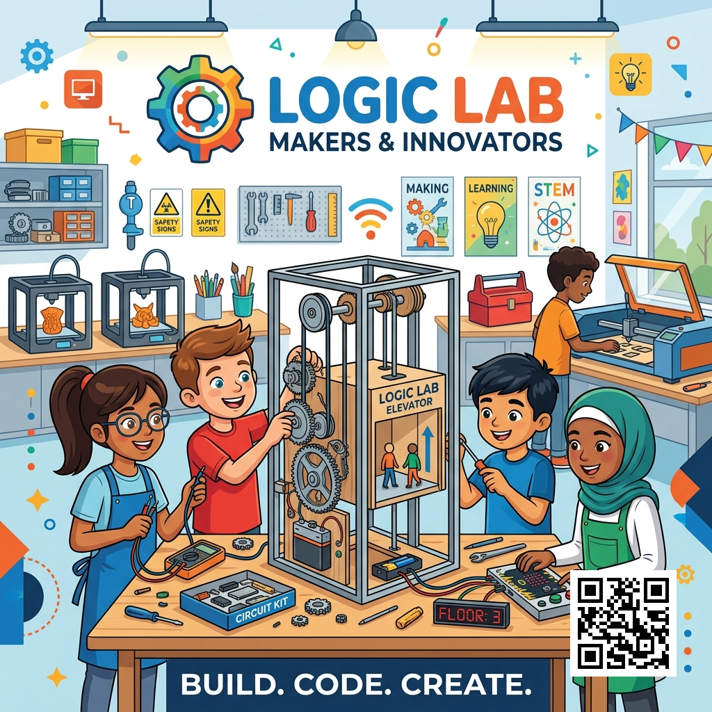

Empowering Tech-Forward Teaching
Victor Moronu
EdTech Coach Candidate
Greenfield Preparatory Middle School
Spring 2026
M.Ed. in Educational Technology candidate at Moreland University. Currently serving as an Instructional Designer at Greenfield Preparatory Middle School. Passionate about bridging the gap between technology access and purposeful pedagogy — empowering teachers to move from using technology to designing with technology.
The Pitch
A 2-minute overview of why Greenfield Prep needs targeted instructional coaching to transform our 1:1 Chromebook initiative.
Watch Capstone Pitch Video
(Opens in Canva)
Hardware Rich, Pedagogy Poor
Greenfield Prep has a 1:1 Chromebook program. But technology without coaching is just expensive furniture.
Substitution Trap
Most tech integration replaces analog tools without functional improvement — stuck at SAMR Level 1.
Distraction Crisis
Teachers report students going off-task on devices as their #1 daily classroom management challenge.
PD That Fails
Generic "sit-and-get" workshops have a negative correlation with actual classroom tech integration.
The Data Speaks
EdTech & Instructional Coaching Survey — 18 teachers + 4 administrators · Greenfield Preparatory Middle School · April 2026
Voices From the Staff
Direct quotes from the EdTech & Coaching Needs Survey open-response section.
Backed by Research
Three-Layer Coaching Model
A job-embedded, evidence-based coaching architecture that meets teachers where they are.
The Pilot in Action



Artifacts Produced
- GoGuardian Scenes: Math & Science teachers built custom focus scenes.
- Device Contracts: Co-authored three-norm digital citizenship contracts with students.
- Pear Deck Integration: Redesigned lessons with formative assessment checkpoints.
- Walkthrough Rubric: A standardized measure for tech integration (SAMR-aligned).
- Canva PD Training: Complete training module delivered to staff.
- EdTech Survey: Deployed to n=22 with full data analysis.
What We Learned
✅ What Worked
- Pre-work (Loom videos) saved time and reduced cognitive load during the session.
- Sandbox environments allowed risk-free practice of GoGuardian features.
- Teachers felt supported as designers, not evaluated.
- Natural coaching dynamics emerged — participants spontaneously traded coach/learner roles.
🔄 Feedback & Iteration
- Challenge: Time constraints inside 90-minute blocks limited depth.
- Solution: Shifting foundational tech-skills to asynchronous video libraries.
- Implication: 1:1 in-class coaching cycles remain the highest-leverage activity.
- Adjustment: Observation protocol updated — "Notice, don't advise" language added.
Cost & Value Analysis
💰 Investment Required
📈 Return on Investment
- Projected 40% reduction in off-task device time.
- Move from SAMR Substitution → Modification.
- Teacher retention: supportive coaching prevents burnout.
- Data-driven instruction via Looker Studio dashboard.
- Scales through peer champions — no additional staff required.
Value Add — Student Learning Outcomes
How this coaching model transforms Greenfield Preparatory Middle School.
🎓 Student Outcomes
Projected 40% reduction in off-task device time, returning critical minutes to active learning and deep cognitive work across Math and Science.
🧑🏫 Teacher Efficacy
Replacing frustrating mandates with supportive, 1:1 job-embedded coaching that builds self-efficacy and prevents burnout — teachers feel supported, not evaluated.
🏫 Tech Leadership
Moves our campus from being "hardware rich but pedagogy poor" to a model of authentic 21st-century integration that other schools will want to replicate.
Implementation Roadmap
Thank You
"Technology will not replace great teachers, but technology in the hands of great teachers can be transformational."
Victor Moronu
M.Ed. in Educational Technology Candidate
Moreland University
Greenfield Preparatory Middle School · Spring 2026